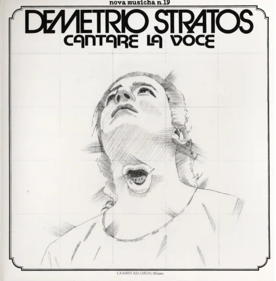

Demetrio Stratos
Biografia, studi e analisi di «Flautofonie e altro»
2019
Una disamina sulla figura di Demetrio Stratos e sulla sua rivoluzionaria concezione della voce come strumento espressivo autonomo dal linguaggio. Attraverso la ricostruzione del suo percorso artistico, l'esame delle ricerche fonetiche e l'analisi di Flautofonie ed altro, l'elaborato esplora le possibilità sonore del corpo umano e il rapporto tra vocalità, comunicazione ed emozione.
Leggi elaborato